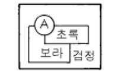
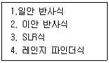

사진기능사 (2005-01-30 기출문제)
1과목: 사진일반
1. 다음 조명 중에서 색온도가 다른 3종류와 가장 차이가 있는 것은?
- 태양광
- 스트로보
- 청색 사진전구
- 텅스텐 사진전구
(정답률: 34%)

2. 컬러 필름의 정상적인 현상 프로세스를 잘못 연결한 것은?
- 컬러네거티브 필름 → C-41
- 내형 발색 컬러 슬라이드 필름 → E-6
- 외형 발색 컬러 슬라이드 필름 → K-14
- 텅스텐 타입 슬라이드 필름 → T-90
(정답률: 40%)
3. 값이 비쌌던 초기 사진의 단점을 해결하고자 유리에 콜로 디온을 입혀 만든 사진이 등장하게 되었다. 이를 무엇이라 고 하는가?
- 탈보트 타입
- 틴 타입
- 칼로 타입
- 엠브로(ambro) 타입
(정답률: 34%)
4. 정착약의 주재료인 티오황산나트륨이 발명되기 이전 정착 의 용도로 사용되었던 것은?
- 설탕물
- 밀가루 녹인 물
- 소금물
- 분필가루 녹인 물
(정답률: 86%)
5. 콜로디온 습판법의 특징은?
- 다게레오 타입이나 칼로 타입보다 조작이 간단하나 인화시간이 길다.
- 노광시간이 매우 길고 현상과정이 매우 간단하다.
- 한 장의 네거티브로 여러 장의 포지티브를 얻을 수 있다.
- 인화한 프린트의 상이 흐리고 인화시간이 길다.
(정답률: 72%)
6. 색온도와 미레드 값과의 관계를 나타낸 등식은?
- 미레드 값 = 10⁶/색온도(K)
- 미레드 값 = 10⁶/노출 값
- 미레드 값 = 색온도(K)/10⁶
- 미레드 값 = 10⁶/가이드 넘버
(정답률: 59%)
7. 색온도에 대한 설명으로 적합치 못한 것은?
- 빛이 푸를수록 색온도는 더 올라간다.
- 일광용 필름은 대략 6,000K에 맞추어져 있다.
- 색온도 변환필터에서 청색계열은 색온도를 낮추고자 할 때 사용한다.
- 일광의 색온도는 하루의 경과시간에 따라 다소 변한다.
(정답률: 62%)
8. 남성 양복지에 검정색실이 많이 들어가 짜여져 있는데 이 검정색실이 다른 색의 채도를 높여주고 발색를 도와주는 역할을 한다. 이것은 다음 어떤 것과 관계가 있는가?
- 색의 동화
- 색의 항상성
- 부의 잔상
- 정의 잔상
(정답률: 53%)
9. 스냅사진의 촬영을 가능케하여 사진의 대중화 시대를 열게 한 사람은?
- 다게르(Louis Jacques Mande Daguerre)
- 니에프스(Joseph Nicephore Niepce)
- 이스트만(George Eastman)
- 슐츠(Heinrich Schulze)
(정답률: 80%)
10. 임시/영구 암실을 설치할 때 고려해야 할 사항과 가장 거리가 먼 것은?
- 통풍시설이 잘 갖추어져야 한다.
- 벽면은 벽돌이어야 한다.
- 건부와 습부로 구분되어야 한다.
- 먼지가 없어야 한다.
(정답률: 78%)
11. CC20Y란 어떤 표시인가?
- 흑백 필터로 2000Å 이하의 Yellow파장을 흡수하는 필터
- 흑백 필터로 200Å 이상의 Yellow파장을 통과시키는 필터
- 색보정 필터로 0.20 농도치의 Yellow 필터
- 색보정 필터로 20 농도치의 Yellow를 반사하는 필터
(정답률: 60%)
12. 눈에 있는 망막의 반사로 눈동자가 붉게 나타나는 현상은?
- 상반칙 불궤 현상
- 적목현상
- parallax
- Fog
(정답률: 95%)
13. 다음 그림에서 A부분을 아주 뚜렷하게 튀어나오게 하려면 어떤색이 가장 적합한가?

- 남색
- 감청
- 노랑
- 자주
(정답률: 71%)
14. 빛의 삼원색인 청색(B), 녹색(G), 적색(R)에 대한 반대색 을 순서에 맞게 나열한 것은?
- Yellow, Magenta, Cyan
- Magenta, Yellow, Cyan
- Cyan, Yellow, Magenta
- Yellow, Cyan, Magenta
(정답률: 86%)
15. 플러드라이트(Floodlight)와 스포트라이트(Spotlight)에 대한 설명 중 옳지 않은 것은?
- 플러드라이트는 광범위한 효과를 얻기 위한 조명 방법이다.
- 스포트라이트는 일종의 점과도 같은 빛을 만들어 내는 것을 목표로 한다.
- 플러드라이트에 의한 조명은 일정한 거리의 원을 중심으로 밖으로 갈수록 빛의 강도가 저하된다.
- 플러드라이팅의 주목적은 명암이 뚜렷한 빛을 만들어 내거나 아주 밝은 하이라이트를 연출해 내는 것이다.
(정답률: 62%)
16. 필름의 유제층을 고감도 유제층과 저감도 유제층으로 이중 도포하는 이유 중 가장 적절한 것은?
- 해상력을 높이기 위해
- 입상성을 좋게 하기 위해
- 관용도를 좁히기 위해
- 관용도를 넓히기 위해
(정답률: 62%)
17. RC 인화지는 수분을 흡수하지 않기 때문에 수세, 건조 시간이 상당히 짧다. 어떠한 이유 때문인가?
- 보호 젤라틴층이 있기 때문에
- 유제층이 있기 때문에
- 폴리에틸렌 수지층이 있기 때문에
- 바리타층이 있기 때문에
(정답률: 47%)
18. 컬러 리버설 필름 현상처리 방식(process)은?
- E - 6
- C - 41
- CN - 16
- D - 25
(정답률: 35%)
19. 중간정지액으로 사용되는 약품은?
- 빙초산
- 염화나트륨
- 티오황산나트륨
- 탄산나트륨
(정답률: 75%)
20. 필름의 구조에서 처음 감광막을 뚫고 들어간 빛이 다시 감광막에 재반사되는 것을 막아 유제층을 보호하기 위한 것은?
- 보호막
- 필터층
- 발색층
- 할레이션 방지층
(정답률: 77%)
2과목: 사진재료 및 현상
21. 흑백필름의 현상약품으로 사용되는 약품이 아닌 것은?
- 메톨
- 페니돈
- 하이포
- 하이드로퀴논
(정답률: 82%)
22. 가시광선 파장영역의 감광재료에 적용되는 필름(전정색성)을 일반적으로 무엇이라 하는가?
- 레귤러(regular)형
- 오르토크로매틱(orthochromatic)형
- 팬크로매틱(panchromatic)형
- IR(infrared)형
(정답률: 31%)
23. 현상액에서 억제제로 작용하는 약품은?
- 브롬화칼륨(KBr)
- 탄산칼륨(K2CO3)
- 붕사(Na2B4O7)
- 탄산나트륨(Na2CO3)
(정답률: 49%)
24. 백네거티브(negative) 필름 현상 처리 공정으로 가장 옳은 것은?
- 현상 - 정지 - 수세 - 정착 - 건조
- 현상 - 정지 - 정착 - 수세 - 건조
- 현상 - 정지 - 수세 - 건조 - 정착
- 정지 - 정착 - 현상 - 수세 - 건조
(정답률: 67%)
25. 투명한 감광지 위에 음화를 만든 뒤 이를 원판으로 사용하여 많은 양화를 만듦으로써 오늘날 네거티브의 시조로 이야기될 수 있는 사람과 그 인화법이 잘 연결된 것은?
- 니스 - 틴타입
- 탈보트 - 칼로타입
- 다게르 - 다게레오타입
- 빅토르 - 암브로타입
(정답률: 52%)
26. 컬러사진 현상처리 과정 중 표백(bleaching)에 대한 설명 으로 옳은 것은?
- 표백은 반드시 암실에서 실시해야 한다.
- 표백주약을 사용하여 흑화은을 제거시키므로 환원 반응이다.
- 표백주약은 EDTA Fe3+ 염을 사용한다.
- 표백은 화학적으로 환원반응이다.
(정답률: 24%)
27. 다계조 인화지(Variable Contrast Paper)의 특성에 해당되는 것은?
- 필터만 바꾸면 한장의 인화지로 계조를 마음대로 바꾸어 쓸 수 있다.
- 필터 없이도 한장의 인화지로 계조를 바꾸어 쓸 수 있다.
- 필터만 바꾸면 한장의 인화지로 컬러, 흑백을 마음대로 바꾸어 쓸 수 있다.
- 필터 없이도 한장의 인화지로 컬러, 흑백을 바꾸어 쓸 수 있다.
(정답률: 41%)
28. 촉진제에 대한 설명 중 맞는 것은?
- 촉진제로서 pH(알칼리도)가 적은 현상액에는 붕사가 사용된다.
- 일반적으로 현상액의 알칼리도가 강할수록 현상력이 약해진다.
- 요드화칼륨은 촉진제로 많이 사용된다.
- 일반적으로 현상액의 알칼리도가 약할수록 포그 (fog)가 발생하기 쉽다.
(정답률: 49%)
29. 노출이 지나쳐 현상결과 필름화상이 검고 콘트라스트가 너무 강할 때 필름을 특수약물로 처리하여 화상의 농도와 콘트라스트를 낮추는 것을 무엇이라 하는가?
- 보력
- 감력
- 조색
- 조제
(정답률: 82%)
30. 착의 속도를 신속하게 하기 위해 사용되는 약품은?
- 티오황산나트륨
- 티오황산암모늄
- 빙초산
- 붕산
(정답률: 30%)
31. 노출계의 TTL 측광 방식에 대한 설명이다. 틀린 것은?
- 일안 반사식 카메라에 내장되어 있다.
- 렌즈를 교환해도 노출을 올바르게 잴 수 있다.
- 여러가지 filter를 사용할때에는 노출 보정을 따로해 주어야 된다.
- 렌즈를 통하여 들어 온 빛을 직접적으로 측정한다.
(정답률: 58%)
32. 피사체면과 렌즈면, 필름면 모두 하나의 공통점에서 만나도록 뷰 카메라의 무브먼트를 조절하여 선명한 초점을 얻을 수 있는 법칙은?
- 상반칙 불궤의 법칙
- 샤임 플러그 법칙
- 3원색설
- 사바티에 효과
(정답률: 45%)
33. 입체적으로 보이는 사진을 찍기 위한 카메라는?
- 리플렉스 카메라(Reflex camera)
- 스테레오 카메라(Stereo camera)
- 파노라마 카메라(Panorama camera)
- 폴라로이드 랜드 카메라(Polaroid land camera)
(정답률: 73%)
34. 피사체가 검은 색일 때 자동플래시를 사용하여 촬영하였다면 노출결과는?
- 노출이 오버되어 회색으로 나왔다.
- 노출이 적정으로 나왔다.
- 노출이 부족되어 더 검어졌다.
- 콘트라스트가 강해졌다.
(정답률: 75%)
35. 렌즈셔터에 대한 설명 중 맞지 않는 것은?
- 렌즈교환이 focal plane shutter보다 용이하다.
- 화면에 노광얼룩이 생기지 않는다.
- 전속도에서 스트로보 동조촬영을 할 수 있다.
- 셔터동작에 의한 진동이 적다.
(정답률: 54%)
36. 자외선, 파랑, 빨강을 흡수하여 검게 묘사하며 정물과 인물의 정색 묘사에 좋은 필터는?
- YG
- R
- O
- B
(정답률: 78%)
37. 다음 항목 중 시계차 보정을 요하는 것만을 골라낸 것은?

- 1,2
- 3,4
- 1,3
- 2,4
(정답률: 50%)
38. 다섯사람이 종대로 줄을 서 있다. 앞뒤 사람 모두 선명하게 잘 나타내려면 가장 적합한 조리개 수치는?
- f/1.4
- f/5.6
- f/8
- f/16
(정답률: 69%)
39. 일반적인 망원렌즈의 성능과 관계가 있는 것은?
- 피사계 심도가 얕다.
- 피사계 심도가 깊다.
- 피사체가 왜곡된다.
- 화각이 넓다.
(정답률: 77%)
40. 물체를 가장 정밀하게 묘사를 할 수 있는 카메라는?
- 110 카메라
- 35mm 카메라
- 120 카메라
- 4x5" 카메라
(정답률: 47%)
3과목: 사진기계 및 촬영
41. 거리에 많은 인파가 밀집된 것처럼 촬영할 때 가장 좋은 렌즈는?
- 어안렌즈
- 광각렌즈
- 표준렌즈
- 망원렌즈
(정답률: 60%)
42. 카메라를 보관하는 방법이다. 가장 옳은 것은?
- 따뜻하고 습기가 많은 곳에 보관한다.
- 사용하지 않을 때는 건전지를 빼 놓는다.
- 옷장 속에 보관해야 한다.
- 직사광선 아래에 보관한다.
(정답률: 91%)
43. 컬러 네거티브 현상방식은?
- K-14
- E-6
- D-16
- C-41
(정답률: 70%)
44. 가이드 넘버와 수동 플래시 노출과의 관계에 대한 설명 중 틀린 것은?
- 노출이 부족한 상태에서 계속해서 플래시 촬영을 할 경우 낮은 가이드 넘버를 사용한다.
- 흰 벽과 천정이 있는 작은 방에서 촬영할 경우 렌즈 구경을 1스톱 줄인다.
- 밤에 실외에서 플래시를 사용한다면 렌즈 구경을 1스톱 넓게 연다.
- 반사판이 없는 플래시를 사용할 경우 렌즈 구경을 1스톱 줄여준다.
(정답률: 46%)
45. 피사계 심도가 깊어지는 경우는?
- 렌즈의 초점거리가 길수록
- 조리개 구경을 크게 할수록
- 조리개 수치를 작게 할수록
- 촬영거리를 멀게 할수록
(정답률: 33%)
46. 필름을 넣어 확대기에 고정시키기 위한 부속 기구는?
- 캐리어
- 탭압케이스
- 크램프
- 콘덴서
(정답률: 55%)
47. 색온도에 영향을 주지 않고 빛의 투과량을 감소시키기 위한 필터는?
- R 필터
- CC 필터
- O 필터
- ND 필터
(정답률: 90%)
48. 레인지 파인더식 카메라의 일반적인 초점 조절방식은?
- 고정 초점식
- 반사식
- 헬리 코이드식
- 거리계 연동식
(정답률: 72%)
49. 셔터를 누른지 1분 정도에 포지티브 프린트를 얻을 수 있는 카메라는?
- 레인지 파인더식 카메라
- 일안반사식 카메라
- 건판식 카메라
- 폴라로이드 카메라
(정답률: 79%)
50. 플래시에 대한 설명 중 틀린 것은?
- 쉽게 휴대할 수 있다.
- 일명 Strobo 라고도 한다.
- 순간적으로 어떤 광원보다도 더 많은 빛을 낸다.
- 광원은 대부분 Halogen Light이다.
(정답률: 45%)
51. 전자 플래시의 접점기호는?
- M
- X
- F
- FP
(정답률: 59%)
52. 작은 부분 또는 반사되는 빛이나 모델의 얼굴 혹은 몸의 특정 부분을 측정하려면 어떤 노출계로 측정하는 것이 가장 좋은가?
- 플래시 노출계
- 입사식 노출계
- 반사식 노출계
- 스포트 노출계
(정답률: 64%)
53. 다음 광원 중 가장 밝은 조명으로 야외에서는 태양광과 같은 역할을 하는 것은?
- 보조광
- 강조광
- 주광
- 반사광
(정답률: 66%)
54. ASA 100 필름으로 촬영할 때 노출이 1/125 초에 조리개가 11일 때, 같은 필름으로 셔터 속도를 1/500초로 하고자 할 때 조리개의 수치는?
- 11
- 8
- 5.6
- 4
(정답률: 80%)
55. 색온도가 낮으면 어느 색이 제일 많이 나타나는가?
- 청색
- 빨강
- 노랑
- 초록
(정답률: 55%)
56. 장마철 인화지 보관이나 카메라 손질법에 대하여 잘못 설명한 것은?
- 일반적으로 열과 습기는 카메라나 필름에 별다른 지장이 없다.
- 카메라가 젖었다고 해서 불에 쬐거나 볕에 말리지 말아야 한다.
- 인화지는 방습제와 함께 건조한 곳에 보관해야 한다.
- 마른 가제 등으로 습기찬 곳을 잘 닦아내야 한다.
(정답률: 71%)
57. 다음 중 피사계 심도와 가장 관계가 없는 것은?
- 필름의 성질
- 촬영거리
- 렌즈의 초점거리
- 조리개의 크기
(정답률: 73%)
58. 콘트라스트가 상대적으로 가장 높은 방식의 확대기는?
- 산광식 확대기
- 집광식 확대기
- 집산광식 확대기
- Press 확대기
(정답률: 64%)
59. 가이드 넘버(GN)는 어떻게 구하는가?
- 조리개값 × 초점거리
- 조명거리 × 초점거리
- 초점거리 × 렌즈구경
- 조리개값 × 조명거리
(정답률: 42%)
60. 입사식 노출계를 사용하는 곳으로 가장 좋은 곳은?
- 야외 풍경사진 촬영
- 실내 스튜디오 촬영
- 망원렌즈를 사용할 때
- 광각렌즈를 사용할 때
(정답률: 54%)